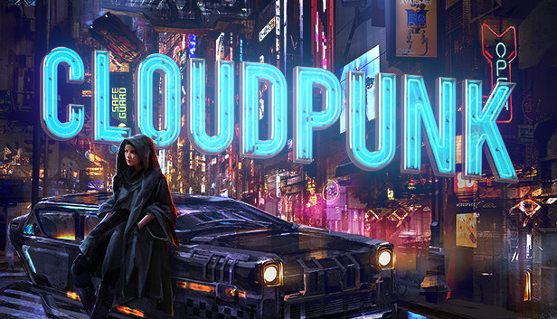

SHADOWRUN DRAGONFALL

Shadowrun is a curious blend. Elves, Orcs, and magic spliced with hacking, street samurai, and giant corporations – it’s Tolkien mixed with Gibson, and it’s bloody marvellous. It’s a great pen & paper game, too, if you’re here for that.
Dragonfall is an expansion to Hairbrained Schemes’ Shadowrun Returns and improves on it in almost every way. Set in New Berlin, you control a group of Shadowrunners, each with their own fleshed out backstories and rich personalities, as they attempt to… well, it’s a mystery, so you’re better off finding out for yourself.
What I can tell you, without spoiling things, is that you will spend most of your time infiltrating various facilities, employing firearms, magic, summoned spirits, and robots to get what you want. Oh yes, and you’ll be able to venture into cyberspace, where you’ll fight AI programs to hack into critical systems.
FAR CRY 3: BLOOD DRAGON

With a suitably neon and retro aesthetic, Far Cry 3: Blood Dragon has enough 80’s theatrics and showmanship to make Daft Punk green with envy. It also features giant genetically altered lizards and spawned one hell of a trailer. Throw in some tight first-person shooter gameplay into the mix, and you may come to understand why we reckon it’s the best DLC Ubisoft has ever made.
Some may doubt If Far Cry 3: Blood Dragon is really cyberpunk, but the expansion is so thoroughly in love with ‘80s cinema that we’re willing to bet you’ll still dig it. Far Cry 3: Blood Dragon is a parody of the period’s action films, cartoons, and video games rolled into one.
It takes place in a retro-futuristic open world island with players jumping into the boots of Sergeant Rex ‘Power’ Colt, who is a military cyborg. Where it truly succeeds, however, is in providing a smaller, tighter, more entertaining open world shooter than its predecessor and even its successor.
DEUS EX

We could expend a great deal of energy reminiscing about how Deus Ex’s dramatic narrative weaves themes of conspiracy, terrorism, and transhumanism together with intriguing characters into a believable dystopian cyberpunk future. Or, we could go on and on about the breadth of character customisation, and how it lets you hone protagonist J.C. Denton into a cybernetically enhanced soldier, expert hacker, or a ghost that lurks in the shadows, and how that makes Deus Ex one of the best stealth games on PC. But what we want to tell you about this iconic cyberpunk game is how good the level design is.
Every map represents a complex sandbox ripe for experimentation. Every combat encounter has the potential to play out in remarkably different ways; should you participate in said encounter rather than slinking past it. Secret paths, hidden caches, informants waiting to be bribed and confidential information opening up new routes and options litter levels, ensuring that when players discuss their experiences. It’s like they are talking about different games.
And it’s all so organic, too. There’s a strong temptation for developers to signpost choices that can be made, to the point where mission objectives explain precisely where you can go and what you need to do, but in Deus Ex, it’s all a surprise. You don’t know that hacking a computer and reading private emails will give you a code that lets you defeat a tough enemy without a fight. You also don’t know that there’s an item hidden within a level that will unlock a previous invisible, unimagined route to the mission objective – you need to go out and explore.
CLOUDPUNK

Cloudpunk is like a cyberpunk theme park ride – strap yourself in and prepare to be served up a big slice of late-night neon metropolis with a dollop of rainy dystopia. You play as Rania, embarking upon a new job as a delivery driver, ferrying packages through streets piled high with skyscrapers and shimmering billboards.
The city is constructed from tiny blocks, which makes it more charming than gritty – but it’s a joy to explore, with numerous NPCs to natter with and some thoughtful quests spread throughout the game. If you’re hungry for cyberpunk, Cloudpunk is sure to sate your appetite.
CYBERPUNK 2077

Based on the Cyberpunk 2020 table top game created in the 1980s, Cyberpunk 2077 takes players on a journey through the hyper-capitalist Night City as V, a mercenary on the hunt for the next big heist. There aren’t many games that use the cyberpunk setting as well as CD Projekt’s open-world action adventure game.
Groundbreaking technology is everywhere in the world of Cyberpunk 2077, and you are constantly reminded of this thanks to the Johnny Silverhand implant in V’s mind. Silverhand critiques every major decision you make, so if you want to stay on his good side you’re going to have to rage against the corporate machine.
CD Projekt set the bar high for Cyberpunk 2077 coming off their 2015 smash hit RPG, The Witcher 3. Though they may have fallen short for some people, Cyberpunk 2077 is undoubtedly one of the most ambitious cyberpunk games ever made.
THE ASCENT

The Ascent is a co-op solo action RPG set in Veles, an overcrowded cyberpunk world.
Welcome to the Arcology of the Ascent Group, a self-sufficient corporate metropolis that stretches into the sky and is filled with creatures from across the galaxy. You are a worker enslaved by the company that owns you and everyone else in your district.
One day, on a routine task using your cyberdeck skills, you suddenly find yourself in the midst of a whirlwind of catastrophic events. The Ascent Group, the biggest mega-corporation on the planet, stops its activities for unknown reasons, making the automatic security systems go crazy.
The survival of your district is threatened: rival corporations try to take over by force and crime syndicates try to increase their black market for improvements. You must arm yourself, stop them from taking control and embark on a new mission to find out what started it all.
You belong to the corporation. Can you survive without her?